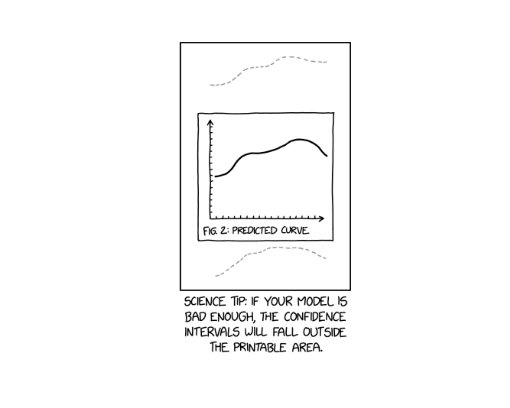
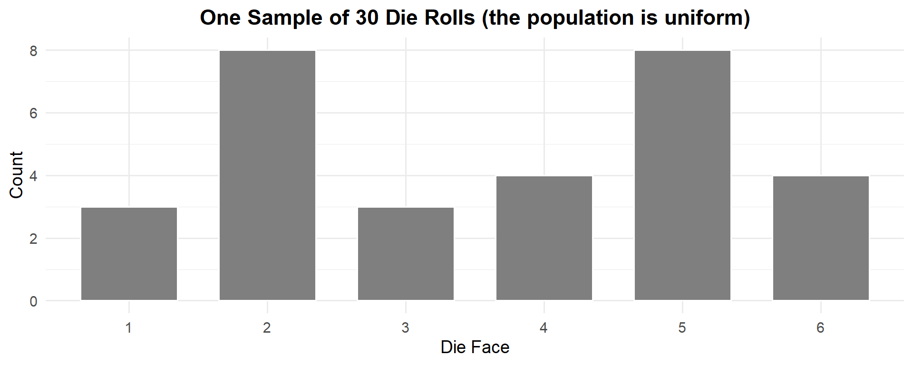
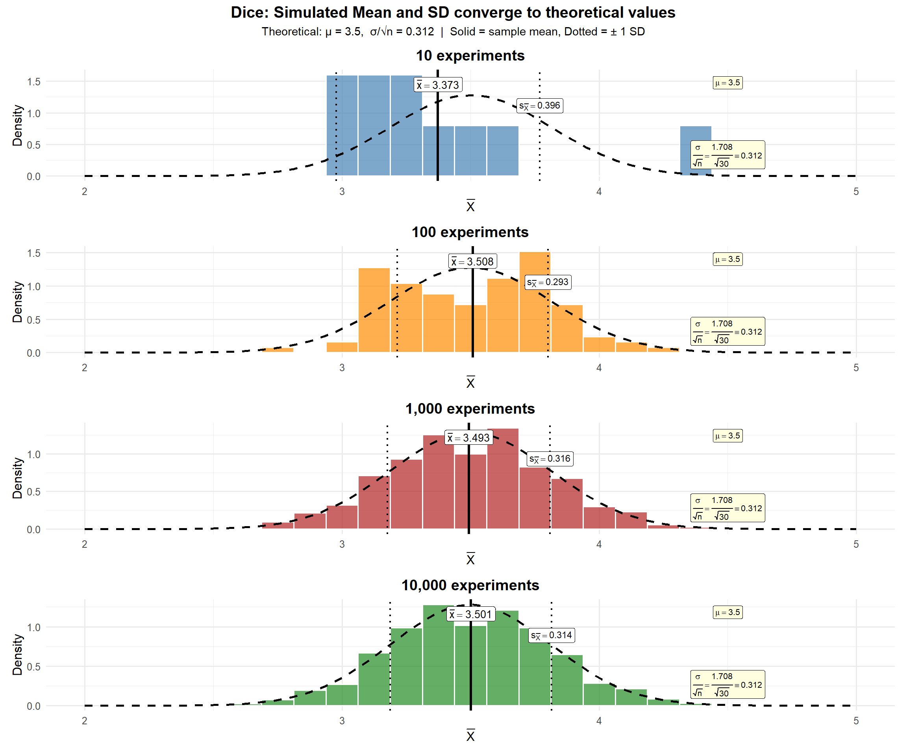
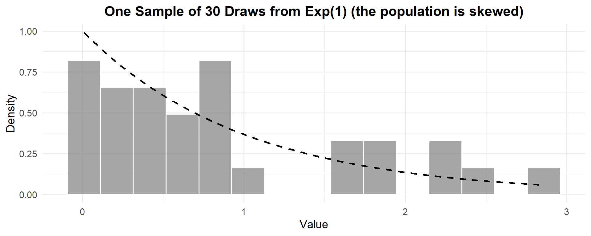
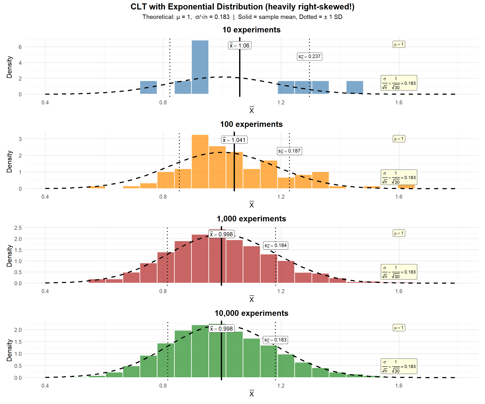
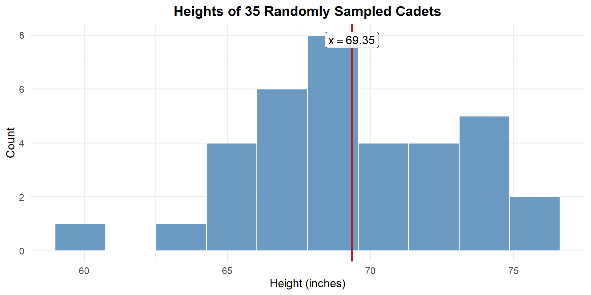
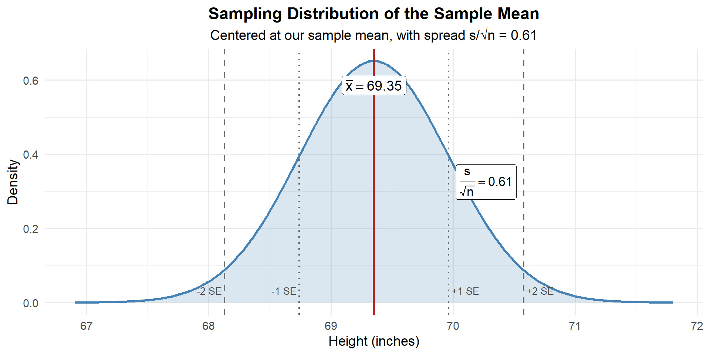
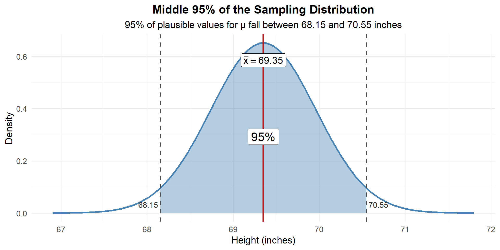
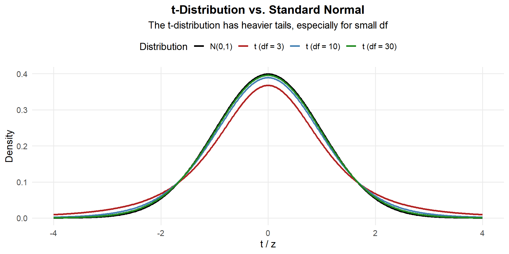

Lesson 18: Confidence Intervals I

TEE Schedule
| Section | 12 May 0730–1100 |
13 May 0730–1100 |
15 May 1300–1630 |
|---|---|---|---|
| A2 | 2 | 0 | 15 |
| B2 | 1 | 0 | 17 |
| C2 | 3 | 1 | 12 |
What We’re Doing: Lesson 18
Objectives
- Define confidence level and margin of error
- Construct one-sample confidence intervals for means
- Justify \(z\) vs. \(t\) procedures and state conditions
Required Reading
Devore, Sections 7.1, 7.2
Break!
Cal
Reese
Last Lesson’s Takeaway: The Central Limit Theorem
Remember, Beyonce is the Central Limit Theorem of Pop
NoteKey Concepts from Lesson 17: Central Limit Theorem
The Central Limit Theorem (CLT): If \(X_1, X_2, \ldots, X_n\) are iid with mean \(\mu\) and standard deviation \(\sigma\), then for large \(n\):
\[\bar{X} \sim N\left(\mu, \frac{\sigma^2}{n}\right)\]
Standard Error of the Mean: \(\sigma_{\bar{X}} = \frac{\sigma}{\sqrt{n}}\)
Key ideas:
- Works regardless of population shape (for large enough \(n\))
- \(n \geq 30\) is the common rule of thumb (any \(n\) if population is normal)
- Larger \(n\) → smaller SE → more precise estimates
- Standardization: \(Z = \frac{\bar{X} - \mu}{\sigma / \sqrt{n}} \sim N(0, 1)\)
Remember this?
Last lesson, we rolled dice as a class and simulated thousands of experiments. As we increased the number of simulations, the distribution of \(\bar{X}\) converged to a normal distribution — and the mean and SD converged to their theoretical values.

The theoretical mean of a fair die is \(\mu = 3.5\) and the theoretical standard deviation is \(\sigma = 1.708\).
While \(X \sim \text{Uniform}(1, 6)\), by the CLT:
\[\bar{X} \sim N\left(\mu, \frac{\sigma^2}{n}\right) = N\left(3.5, \frac{1.708^2}{30}\right)\]
with standard error \(\frac{\sigma}{\sqrt{n}} = \frac{1.708}{\sqrt{30}} = 0.312\).
Let’s verify by simulation:

ImportantThe SD on these plots is σ/√n — the Standard Error
The SD shown (\(s \approx 0.312\)) is not the SD of a single die roll (\(\sigma = 1.708\)). It’s the SD of the sample means — i.e., \(\frac{\sigma}{\sqrt{n}} = \frac{1.708}{\sqrt{30}} = 0.312\).
This is the standard error — and it’s the building block for confidence intervals.
What about a skewed distribution?

This is one experiment — one sample of \(n = 30\) draws from \(\text{Exp}(1)\). Clearly not normal — it’s heavily right-skewed. The theoretical mean is \(\mu = 1\) and the theoretical standard deviation is \(\sigma = 1\).
While \(X \sim \text{Exp}(1)\), by the CLT:
\[\bar{X} \sim N\left(\mu, \frac{\sigma^2}{n}\right) = N\left(1, \frac{1^2}{30}\right)\]
with standard error \(\frac{\sigma}{\sqrt{n}} = \frac{1}{\sqrt{30}} = 0.183\).
Does the CLT still work when the population looks like this? Let’s see:

ImportantThe CLT works even for skewed populations!
The exponential distribution is heavily right-skewed — it looks nothing like a bell curve. But the distribution of \(\bar{X}\) still converges to normal, with mean \(\mu = 1\) and \(SE = \frac{\sigma}{\sqrt{n}} = \frac{1}{\sqrt{30}} = 0.183\).
The CLT doesn’t care about the shape of the population — only that \(n\) is large enough.
From the CLT to Confidence Intervals
Motivating Example: Cadet Heights
Suppose we want to know the true average height of all cadets at West Point. We can’t measure every cadet, so we take a random sample of \(n = 35\) cadets and measure their heights (in inches).

From our sample we compute:
- \(\bar{x} = 69.35\) inches
- \(s = 3.62\) inches
- \(\frac{s}{\sqrt{n}} = \frac{3.62}{\sqrt{35}} = 0.61\) inches
We have a point estimate of the true mean: \(\bar{x} = 69.35\) inches. But how good is that estimate?
The question: What are reasonable values the true mean \(\mu\) could be?
- Could \(\mu\) be 69 inches? Maybe — that’s close to \(\bar{x}\).
- Could \(\mu\) be 72 inches? Seems unlikely — that’s pretty far from \(\bar{x}\).
- Could \(\mu\) be 60 inches? Almost certainly not.
We need a way to formalize “close” and “far.” That’s what a confidence interval does.
Remember the CLT
Last lesson we learned that if we take samples of size \(n\), the sampling distribution of \(\bar{X}\) is:
\[\bar{X} \sim N\left(\mu, \frac{\sigma^2}{n}\right)\]
We don’t know \(\mu\) — that’s what we’re trying to figure out! But we do have our sample data. Let’s use what we have:
- \(\bar{x} = 69.35\)
- \(\frac{s}{\sqrt{n}} = \frac{3.62}{\sqrt{35}} = 0.61\)
So we can sketch the sampling distribution of \(\bar{X}\), centered at our best guess \(\bar{x}\), with spread \(\frac{s}{\sqrt{n}}\):

This is the distribution of where \(\bar{X}\) could land if we repeated the experiment. And by the same logic — it tells us where the true mean \(\mu\) could plausibly be.
The problem: We don’t know \(\mu\). That’s the whole point — we’re trying to estimate it!
The idea: If \(\bar{X}\) is close to \(\mu\), then \(\mu\) is close to \(\bar{X}\). We can build an interval around \(\bar{X}\) that we’re confident contains \(\mu\).
What’s a “Reasonable Range” for μ?
Looking at our sampling distribution, we can see that most of the area is within about 2 SEs of \(\bar{x}\). What if we wanted to find the range that captures the middle 95% of plausible values?

We can calculate this directly. We want the values \(a\) and \(b\) such that 95% of the distribution falls between them:
- \(\bar{x} = 69.35\)
- \(\frac{s}{\sqrt{n}} = 0.61\)
# Find the middle 95% range
qnorm(0.025, mean = 69.35, sd = 0.61) # lower bound (2.5th percentile)[1] 68.15442qnorm(0.975, mean = 69.35, sd = 0.61) # upper bound (97.5th percentile)[1] 70.54558So we are 95% confident that the true mean cadet height is between 68.15 and 70.55 inches.
Deriving the Confidence Interval Formula
What we just computed was \(P(a \leq \mu \leq b) = 1 - \alpha\). Let’s formalize this by standardizing \(\bar{X}\).
Recall the standardized statistic:
\[Z = \frac{\bar{X} - \mu}{\sigma / \sqrt{n}}\]
We want to find the middle \(1 - \alpha\) of this distribution:
\[P\left(-z_{\alpha/2} \leq \frac{\bar{X} - \mu}{\sigma / \sqrt{n}} \leq z_{\alpha/2}\right) = 1 - \alpha\]
Now solve for \(\mu\). Multiply all three parts by \(\sigma/\sqrt{n}\):
\[P\left(-z_{\alpha/2} \cdot \frac{\sigma}{\sqrt{n}} \leq \bar{X} - \mu \leq z_{\alpha/2} \cdot \frac{\sigma}{\sqrt{n}}\right) = 1 - \alpha\]
Subtract \(\bar{X}\) from all three parts:
\[P\left(-\bar{X} - z_{\alpha/2} \cdot \frac{\sigma}{\sqrt{n}} \leq -\mu \leq -\bar{X} + z_{\alpha/2} \cdot \frac{\sigma}{\sqrt{n}}\right) = 1 - \alpha\]
Multiply by \(-1\) (which flips the inequalities):
\[P\left(\bar{X} + z_{\alpha/2} \cdot \frac{\sigma}{\sqrt{n}} \geq \mu \geq \bar{X} - z_{\alpha/2} \cdot \frac{\sigma}{\sqrt{n}}\right) = 1 - \alpha\]
Rewrite in the natural order:
\[\boxed{\bar{X} \pm z_{\alpha/2} \cdot \frac{\sigma}{\sqrt{n}}}\]
Applying the Formula
Let’s apply this to the cadet height example from above. Recall:
- \(n = 35\), \(\bar{x} = 69.35\), \(\sigma = 3.62\)
Construct a 95% confidence interval for \(\mu\).
Plugging into the formula:
\[\bar{x} \pm z_{\alpha/2} \cdot \frac{\sigma}{\sqrt{n}}\]
becomes:
\[69.35 \pm z_{.05/2} \cdot \frac{3.62}{\sqrt{35}}\]
Now we need to find \(z_{\alpha/2}\). For 95% confidence, \(\alpha = 0.05\), so \(\alpha/2 = 0.025\):
qnorm(0.025) # -z_{α/2}[1] -1.959964qnorm(0.975) # z_{α/2}[1] 1.959964
NoteZ Table
| 0.00 | 0.01 | 0.02 | 0.03 | 0.04 | 0.05 | 0.06 | 0.07 | 0.08 | 0.09 | |
|---|---|---|---|---|---|---|---|---|---|---|
| -2.0 | 0.0228 | 0.0233 | 0.0239 | 0.0244 | 0.0250 | 0.0256 | 0.0262 | 0.0268 | 0.0274 | 0.0281 |
| -1.9 | 0.0287 | 0.0294 | 0.0301 | 0.0307 | 0.0314 | 0.0322 | 0.0329 | 0.0336 | 0.0344 | 0.0351 |
| -1.8 | 0.0359 | 0.0367 | 0.0375 | 0.0384 | 0.0392 | 0.0401 | 0.0409 | 0.0418 | 0.0427 | 0.0436 |
| -1.7 | 0.0446 | 0.0455 | 0.0465 | 0.0475 | 0.0485 | 0.0495 | 0.0505 | 0.0516 | 0.0526 | 0.0537 |
| -1.6 | 0.0548 | 0.0559 | 0.0571 | 0.0582 | 0.0594 | 0.0606 | 0.0618 | 0.0630 | 0.0643 | 0.0655 |
| -1.5 | 0.0668 | 0.0681 | 0.0694 | 0.0708 | 0.0721 | 0.0735 | 0.0749 | 0.0764 | 0.0778 | 0.0793 |
| -1.4 | 0.0808 | 0.0823 | 0.0838 | 0.0853 | 0.0869 | 0.0885 | 0.0901 | 0.0918 | 0.0934 | 0.0951 |
| -1.3 | 0.0968 | 0.0985 | 0.1003 | 0.1020 | 0.1038 | 0.1056 | 0.1075 | 0.1093 | 0.1112 | 0.1131 |
| -1.2 | 0.1151 | 0.1170 | 0.1190 | 0.1210 | 0.1230 | 0.1251 | 0.1271 | 0.1292 | 0.1314 | 0.1335 |
| -1.1 | 0.1357 | 0.1379 | 0.1401 | 0.1423 | 0.1446 | 0.1469 | 0.1492 | 0.1515 | 0.1539 | 0.1562 |
| -1.0 | 0.1587 | 0.1611 | 0.1635 | 0.1660 | 0.1685 | 0.1711 | 0.1736 | 0.1762 | 0.1788 | 0.1814 |
| -0.9 | 0.1841 | 0.1867 | 0.1894 | 0.1922 | 0.1949 | 0.1977 | 0.2005 | 0.2033 | 0.2061 | 0.2090 |
| -0.8 | 0.2119 | 0.2148 | 0.2177 | 0.2206 | 0.2236 | 0.2266 | 0.2296 | 0.2327 | 0.2358 | 0.2389 |
| -0.7 | 0.2420 | 0.2451 | 0.2483 | 0.2514 | 0.2546 | 0.2578 | 0.2611 | 0.2643 | 0.2676 | 0.2709 |
| -0.6 | 0.2743 | 0.2776 | 0.2810 | 0.2843 | 0.2877 | 0.2912 | 0.2946 | 0.2981 | 0.3015 | 0.3050 |
| -0.5 | 0.3085 | 0.3121 | 0.3156 | 0.3192 | 0.3228 | 0.3264 | 0.3300 | 0.3336 | 0.3372 | 0.3409 |
| -0.4 | 0.3446 | 0.3483 | 0.3520 | 0.3557 | 0.3594 | 0.3632 | 0.3669 | 0.3707 | 0.3745 | 0.3783 |
| -0.3 | 0.3821 | 0.3859 | 0.3897 | 0.3936 | 0.3974 | 0.4013 | 0.4052 | 0.4090 | 0.4129 | 0.4168 |
| -0.2 | 0.4207 | 0.4247 | 0.4286 | 0.4325 | 0.4364 | 0.4404 | 0.4443 | 0.4483 | 0.4522 | 0.4562 |
| -0.1 | 0.4602 | 0.4641 | 0.4681 | 0.4721 | 0.4761 | 0.4801 | 0.4840 | 0.4880 | 0.4920 | 0.4960 |
| 0.0 | 0.5000 | 0.5040 | 0.5080 | 0.5120 | 0.5160 | 0.5199 | 0.5239 | 0.5279 | 0.5319 | 0.5359 |
| 0.1 | 0.5398 | 0.5438 | 0.5478 | 0.5517 | 0.5557 | 0.5596 | 0.5636 | 0.5675 | 0.5714 | 0.5753 |
| 0.2 | 0.5793 | 0.5832 | 0.5871 | 0.5910 | 0.5948 | 0.5987 | 0.6026 | 0.6064 | 0.6103 | 0.6141 |
| 0.3 | 0.6179 | 0.6217 | 0.6255 | 0.6293 | 0.6331 | 0.6368 | 0.6406 | 0.6443 | 0.6480 | 0.6517 |
| 0.4 | 0.6554 | 0.6591 | 0.6628 | 0.6664 | 0.6700 | 0.6736 | 0.6772 | 0.6808 | 0.6844 | 0.6879 |
| 0.5 | 0.6915 | 0.6950 | 0.6985 | 0.7019 | 0.7054 | 0.7088 | 0.7123 | 0.7157 | 0.7190 | 0.7224 |
| 0.6 | 0.7257 | 0.7291 | 0.7324 | 0.7357 | 0.7389 | 0.7422 | 0.7454 | 0.7486 | 0.7517 | 0.7549 |
| 0.7 | 0.7580 | 0.7611 | 0.7642 | 0.7673 | 0.7704 | 0.7734 | 0.7764 | 0.7794 | 0.7823 | 0.7852 |
| 0.8 | 0.7881 | 0.7910 | 0.7939 | 0.7967 | 0.7995 | 0.8023 | 0.8051 | 0.8078 | 0.8106 | 0.8133 |
| 0.9 | 0.8159 | 0.8186 | 0.8212 | 0.8238 | 0.8264 | 0.8289 | 0.8315 | 0.8340 | 0.8365 | 0.8389 |
| 1.0 | 0.8413 | 0.8438 | 0.8461 | 0.8485 | 0.8508 | 0.8531 | 0.8554 | 0.8577 | 0.8599 | 0.8621 |
| 1.1 | 0.8643 | 0.8665 | 0.8686 | 0.8708 | 0.8729 | 0.8749 | 0.8770 | 0.8790 | 0.8810 | 0.8830 |
| 1.2 | 0.8849 | 0.8869 | 0.8888 | 0.8907 | 0.8925 | 0.8944 | 0.8962 | 0.8980 | 0.8997 | 0.9015 |
| 1.3 | 0.9032 | 0.9049 | 0.9066 | 0.9082 | 0.9099 | 0.9115 | 0.9131 | 0.9147 | 0.9162 | 0.9177 |
| 1.4 | 0.9192 | 0.9207 | 0.9222 | 0.9236 | 0.9251 | 0.9265 | 0.9279 | 0.9292 | 0.9306 | 0.9319 |
| 1.5 | 0.9332 | 0.9345 | 0.9357 | 0.9370 | 0.9382 | 0.9394 | 0.9406 | 0.9418 | 0.9429 | 0.9441 |
| 1.6 | 0.9452 | 0.9463 | 0.9474 | 0.9484 | 0.9495 | 0.9505 | 0.9515 | 0.9525 | 0.9535 | 0.9545 |
| 1.7 | 0.9554 | 0.9564 | 0.9573 | 0.9582 | 0.9591 | 0.9599 | 0.9608 | 0.9616 | 0.9625 | 0.9633 |
| 1.8 | 0.9641 | 0.9649 | 0.9656 | 0.9664 | 0.9671 | 0.9678 | 0.9686 | 0.9693 | 0.9699 | 0.9706 |
| 1.9 | 0.9713 | 0.9719 | 0.9726 | 0.9732 | 0.9738 | 0.9744 | 0.9750 | 0.9756 | 0.9761 | 0.9767 |
| 2.0 | 0.9772 | 0.9778 | 0.9783 | 0.9788 | 0.9793 | 0.9798 | 0.9803 | 0.9808 | 0.9812 | 0.9817 |
So:
\[69.35 \pm 1.96 \cdot \frac{3.62}{\sqrt{35}}\]
\[69.35 \pm 1.20\]
\[\left( 68.15, \; 70.54 \right)\]
xbar <- 69.35; sigma <- 3.62; n <- 35
z_star <- qnorm(0.975)
margin <- z_star * sigma / sqrt(n)
c(xbar - margin, xbar + margin)[1] 68.15071 70.54929We are 95% confident that the true mean cadet height is between 68.15 and 70.55 inches.
Now what if we wanted a 90% confidence interval instead?
For 90% confidence, \(\alpha = 0.10\), so \(\alpha/2 = 0.05\):
qnorm(0.05) # -z_{α/2}[1] -1.644854qnorm(0.95) # z_{α/2}[1] 1.644854
NoteZ Table
| 0.00 | 0.01 | 0.02 | 0.03 | 0.04 | 0.05 | 0.06 | 0.07 | 0.08 | 0.09 | |
|---|---|---|---|---|---|---|---|---|---|---|
| -2.0 | 0.0228 | 0.0233 | 0.0239 | 0.0244 | 0.0250 | 0.0256 | 0.0262 | 0.0268 | 0.0274 | 0.0281 |
| -1.9 | 0.0287 | 0.0294 | 0.0301 | 0.0307 | 0.0314 | 0.0322 | 0.0329 | 0.0336 | 0.0344 | 0.0351 |
| -1.8 | 0.0359 | 0.0367 | 0.0375 | 0.0384 | 0.0392 | 0.0401 | 0.0409 | 0.0418 | 0.0427 | 0.0436 |
| -1.7 | 0.0446 | 0.0455 | 0.0465 | 0.0475 | 0.0485 | 0.0495 | 0.0505 | 0.0516 | 0.0526 | 0.0537 |
| -1.6 | 0.0548 | 0.0559 | 0.0571 | 0.0582 | 0.0594 | 0.0606 | 0.0618 | 0.0630 | 0.0643 | 0.0655 |
| -1.5 | 0.0668 | 0.0681 | 0.0694 | 0.0708 | 0.0721 | 0.0735 | 0.0749 | 0.0764 | 0.0778 | 0.0793 |
| -1.4 | 0.0808 | 0.0823 | 0.0838 | 0.0853 | 0.0869 | 0.0885 | 0.0901 | 0.0918 | 0.0934 | 0.0951 |
| -1.3 | 0.0968 | 0.0985 | 0.1003 | 0.1020 | 0.1038 | 0.1056 | 0.1075 | 0.1093 | 0.1112 | 0.1131 |
| -1.2 | 0.1151 | 0.1170 | 0.1190 | 0.1210 | 0.1230 | 0.1251 | 0.1271 | 0.1292 | 0.1314 | 0.1335 |
| -1.1 | 0.1357 | 0.1379 | 0.1401 | 0.1423 | 0.1446 | 0.1469 | 0.1492 | 0.1515 | 0.1539 | 0.1562 |
| -1.0 | 0.1587 | 0.1611 | 0.1635 | 0.1660 | 0.1685 | 0.1711 | 0.1736 | 0.1762 | 0.1788 | 0.1814 |
| -0.9 | 0.1841 | 0.1867 | 0.1894 | 0.1922 | 0.1949 | 0.1977 | 0.2005 | 0.2033 | 0.2061 | 0.2090 |
| -0.8 | 0.2119 | 0.2148 | 0.2177 | 0.2206 | 0.2236 | 0.2266 | 0.2296 | 0.2327 | 0.2358 | 0.2389 |
| -0.7 | 0.2420 | 0.2451 | 0.2483 | 0.2514 | 0.2546 | 0.2578 | 0.2611 | 0.2643 | 0.2676 | 0.2709 |
| -0.6 | 0.2743 | 0.2776 | 0.2810 | 0.2843 | 0.2877 | 0.2912 | 0.2946 | 0.2981 | 0.3015 | 0.3050 |
| -0.5 | 0.3085 | 0.3121 | 0.3156 | 0.3192 | 0.3228 | 0.3264 | 0.3300 | 0.3336 | 0.3372 | 0.3409 |
| -0.4 | 0.3446 | 0.3483 | 0.3520 | 0.3557 | 0.3594 | 0.3632 | 0.3669 | 0.3707 | 0.3745 | 0.3783 |
| -0.3 | 0.3821 | 0.3859 | 0.3897 | 0.3936 | 0.3974 | 0.4013 | 0.4052 | 0.4090 | 0.4129 | 0.4168 |
| -0.2 | 0.4207 | 0.4247 | 0.4286 | 0.4325 | 0.4364 | 0.4404 | 0.4443 | 0.4483 | 0.4522 | 0.4562 |
| -0.1 | 0.4602 | 0.4641 | 0.4681 | 0.4721 | 0.4761 | 0.4801 | 0.4840 | 0.4880 | 0.4920 | 0.4960 |
| 0.0 | 0.5000 | 0.5040 | 0.5080 | 0.5120 | 0.5160 | 0.5199 | 0.5239 | 0.5279 | 0.5319 | 0.5359 |
| 0.1 | 0.5398 | 0.5438 | 0.5478 | 0.5517 | 0.5557 | 0.5596 | 0.5636 | 0.5675 | 0.5714 | 0.5753 |
| 0.2 | 0.5793 | 0.5832 | 0.5871 | 0.5910 | 0.5948 | 0.5987 | 0.6026 | 0.6064 | 0.6103 | 0.6141 |
| 0.3 | 0.6179 | 0.6217 | 0.6255 | 0.6293 | 0.6331 | 0.6368 | 0.6406 | 0.6443 | 0.6480 | 0.6517 |
| 0.4 | 0.6554 | 0.6591 | 0.6628 | 0.6664 | 0.6700 | 0.6736 | 0.6772 | 0.6808 | 0.6844 | 0.6879 |
| 0.5 | 0.6915 | 0.6950 | 0.6985 | 0.7019 | 0.7054 | 0.7088 | 0.7123 | 0.7157 | 0.7190 | 0.7224 |
| 0.6 | 0.7257 | 0.7291 | 0.7324 | 0.7357 | 0.7389 | 0.7422 | 0.7454 | 0.7486 | 0.7517 | 0.7549 |
| 0.7 | 0.7580 | 0.7611 | 0.7642 | 0.7673 | 0.7704 | 0.7734 | 0.7764 | 0.7794 | 0.7823 | 0.7852 |
| 0.8 | 0.7881 | 0.7910 | 0.7939 | 0.7967 | 0.7995 | 0.8023 | 0.8051 | 0.8078 | 0.8106 | 0.8133 |
| 0.9 | 0.8159 | 0.8186 | 0.8212 | 0.8238 | 0.8264 | 0.8289 | 0.8315 | 0.8340 | 0.8365 | 0.8389 |
| 1.0 | 0.8413 | 0.8438 | 0.8461 | 0.8485 | 0.8508 | 0.8531 | 0.8554 | 0.8577 | 0.8599 | 0.8621 |
| 1.1 | 0.8643 | 0.8665 | 0.8686 | 0.8708 | 0.8729 | 0.8749 | 0.8770 | 0.8790 | 0.8810 | 0.8830 |
| 1.2 | 0.8849 | 0.8869 | 0.8888 | 0.8907 | 0.8925 | 0.8944 | 0.8962 | 0.8980 | 0.8997 | 0.9015 |
| 1.3 | 0.9032 | 0.9049 | 0.9066 | 0.9082 | 0.9099 | 0.9115 | 0.9131 | 0.9147 | 0.9162 | 0.9177 |
| 1.4 | 0.9192 | 0.9207 | 0.9222 | 0.9236 | 0.9251 | 0.9265 | 0.9279 | 0.9292 | 0.9306 | 0.9319 |
| 1.5 | 0.9332 | 0.9345 | 0.9357 | 0.9370 | 0.9382 | 0.9394 | 0.9406 | 0.9418 | 0.9429 | 0.9441 |
| 1.6 | 0.9452 | 0.9463 | 0.9474 | 0.9484 | 0.9495 | 0.9505 | 0.9515 | 0.9525 | 0.9535 | 0.9545 |
| 1.7 | 0.9554 | 0.9564 | 0.9573 | 0.9582 | 0.9591 | 0.9599 | 0.9608 | 0.9616 | 0.9625 | 0.9633 |
| 1.8 | 0.9641 | 0.9649 | 0.9656 | 0.9664 | 0.9671 | 0.9678 | 0.9686 | 0.9693 | 0.9699 | 0.9706 |
| 1.9 | 0.9713 | 0.9719 | 0.9726 | 0.9732 | 0.9738 | 0.9744 | 0.9750 | 0.9756 | 0.9761 | 0.9767 |
| 2.0 | 0.9772 | 0.9778 | 0.9783 | 0.9788 | 0.9793 | 0.9798 | 0.9803 | 0.9808 | 0.9812 | 0.9817 |
\[\bar{x} \pm z_{\alpha/2} \cdot \frac{\sigma}{\sqrt{n}}\]
\[69.35 \pm 1.645 \cdot \frac{3.62}{\sqrt{35}}\]
\[69.35 \pm 1.01\]
z_star_90 <- qnorm(0.95)
margin_90 <- z_star_90 * sigma / sqrt(n)
c(xbar - margin_90, xbar + margin_90)[1] 68.34353 70.35647The 90% CI is narrower than the 95% CI. Less confidence → smaller multiplier → tighter interval.
Small Samples and the \(t\)-Distribution
The Problem with Small Samples
When \(n\) is large (\(n \geq 30\)), we can use \(s\) to estimate \(\sigma\) and the \(z\)-interval works well — the CLT guarantees the sampling distribution is approximately normal, and \(s\) is a reliable estimate of \(\sigma\).
But when \(n\) is small (\(n < 30\)), \(s\) is a less reliable estimate of \(\sigma\). This introduces extra uncertainty that the \(z\)-interval doesn’t account for.
The solution: Use the \(t\)-distribution, which has heavier tails to account for this extra uncertainty.
The \(t\)-Distribution
ImportantThe t-Distribution
When the sample size is small, we use the \(t\)-distribution instead of the normal. The standardized statistic:
\[T = \frac{\bar{X} - \mu}{s / \sqrt{n}}\]
follows a \(t\)-distribution with \(\nu = n - 1\) degrees of freedom (df).

Key properties of the \(t\)-distribution:
- Symmetric and bell-shaped, centered at 0
- Heavier tails than the normal → wider intervals (accounts for extra uncertainty in small samples)
- As \(df \to \infty\), \(t \to N(0, 1)\) — which is why \(z\) works fine for large \(n\)
- Degrees of freedom: \(\nu = n - 1\)
Confidence Interval for μ (Small Samples)
ImportantOne-Sample t-Interval
\[\bar{X} \pm t_{\alpha/2, \, n-1} \cdot \frac{s}{\sqrt{n}}\]
where:
- \(\bar{x}\) = sample mean
- \(s\) = sample standard deviation
- \(n\) = sample size
- \(t_{\alpha/2, \, n-1}\) = critical value from the \(t\)-distribution with \(n-1\) df
Conditions:
- Random sample (or representative of the population)
- Independence (observations are independent)
- Normality: Population should be approximately normal (since \(n < 30\), we can’t rely on the CLT)
# Finding t critical values in R
qt(0.975, df = 48) # t* for 95% CI, n = 49[1] 2.010635qt(0.975, df = 10) # t* for 95% CI, n = 11[1] 2.228139qt(0.975, df = 4) # t* for 95% CI, n = 5[1] 2.776445Notice: smaller \(n\) → fewer df → larger \(t^*\) → wider interval.
Example: AFT Sprint-Drag-Carry
A random sample of \(n = 25\) cadets has a mean Sprint-Drag-Carry time of \(\bar{x} = 108\) seconds with \(s = 15\) seconds. Construct a 95% confidence interval for \(\mu\).
Since \(n = 25 < 30\), we use the \(t\)-interval with \(df = n - 1 = 24\):
\[\bar{x} \pm t_{\alpha/2, \, n-1} \cdot \frac{s}{\sqrt{n}}\]
\[108 \pm t_{.025, \, 24} \cdot \frac{15}{\sqrt{25}}\]
qt(0.025, df = 24)[1] -2.063899qt(0.975, df = 24)[1] 2.063899\[108 \pm 2.064 \cdot \frac{15}{\sqrt{25}} = 108 \pm 6.19\]
\[\left(101.81, \; 114.19\right)\]
xbar <- 108
s <- 15
n <- 25
t_star <- qt(0.975, df = n - 1)
se <- s / sqrt(n)
margin <- t_star * se
c(xbar - margin, xbar + margin)[1] 101.8083 114.1917We are 95% confident that the true mean Sprint-Drag-Carry time for cadets is between 101.8 and 114.2 seconds.
The Takeaway for Today
ImportantConfidence Interval Formulas
| Formula | Conditions | Critical Value | |
|---|---|---|---|
| Large sample (\(n \geq 30\)) | \(\bar{X} \pm z_{\alpha/2} \cdot \dfrac{\sigma}{\sqrt{n}}\) | Random sample, independence, \(s \approx \sigma\) | \(z_{\alpha/2}\) from qnorm() |
| Small sample (\(n < 30\)) | \(\bar{X} \pm t_{\alpha/2, n-1} \cdot \dfrac{s}{\sqrt{n}}\) | Random sample, independence, population ~ Normal | \(t_{\alpha/2, n-1}\) from qt() |
Why the difference? For large \(n\), \(s\) is a reliable estimate of \(\sigma\) and the \(t\)-distribution is nearly identical to the normal. For small \(n\), the extra uncertainty matters and the \(t\)-distribution’s heavier tails account for it.
WarningInterpreting Confidence Intervals
Wrong: “There is a 95% probability that \(\mu\) is in this interval.”
Also wrong: “There is a 95% chance the true mean is between LB and UB.”
Right: “Using this method, we are 95% confident that the interval from LB to UB captures the true mean.”
Also right: “If we repeated this sampling process many times, about 95% of the resulting intervals would contain \(\mu\).”
The parameter \(\mu\) is fixed — it’s not random. The interval is random (because \(\bar{X}\) is random). Once we compute the interval, \(\mu\) either is or isn’t in it — we just don’t know which. The word “confident” refers to the method’s long-run success rate, not a probability about any single interval.

NoteWhat affects the width of a confidence interval?
Confidence level (\(C\)): Higher confidence → wider interval. Lower confidence → narrower interval.
- 99% CI is wider than 95% CI is wider than 90% CI
- More confidence requires casting a wider net
Sample size (\(n\)): Larger \(n\) → narrower interval. Smaller \(n\) → wider interval.
- More data → more precise estimate → tighter interval
- The standard error \(\frac{s}{\sqrt{n}}\) shrinks as \(n\) grows
Board Problems
Problem 1: Patrol Readiness
A battalion commander wants to estimate the average time (in minutes) for platoons to reach full readiness after an alert. A random sample of \(n = 36\) alerts gives \(\bar{x} = 12.4\) minutes with \(s = 3.6\) minutes.
NoteQuestions
Construct a 95% confidence interval for the true mean readiness time.
The standard requires readiness in under 15 minutes on average. Based on your interval, is the battalion meeting the standard?
Construct a 99% confidence interval. How does it compare to the 95% interval?
TipAnswers
- Since \(n = 36 \geq 30\), we use the \(z\)-interval. \(z^* = 1.96\)
\[12.4 \pm 1.96 \cdot \frac{3.6}{\sqrt{36}} = 12.4 \pm 1.18 = (11.22, \; 13.58)\]
[1] 11.22402 13.57598We are 95% confident the true mean readiness time is between 11.22 and 13.58 minutes.
Yes — the entire interval is below 15 minutes, so we’re confident the battalion meets the standard.
\(z^* = 2.576\) for 99% CI:
\[12.4 \pm 2.576 \cdot 0.6 = 12.4 \pm 1.55 = (10.85, \; 13.95)\]
[1] 10.8545 13.9455The 99% interval is wider — more confidence requires a wider net.
Problem 2: Ammunition Expenditure
During training exercises, a random sample of \(n = 16\) squads expended an average of \(\bar{x} = 840\) rounds with \(s = 120\) rounds. Assume ammunition expenditure is approximately normally distributed.
NoteQuestions
Why is the normality assumption important here?
Construct a 90% confidence interval for the true mean rounds expended per squad.
How many squads should be sampled to estimate the mean within 25 rounds with 95% confidence?
TipAnswers
Because \(n = 16 < 30\), the CLT alone doesn’t guarantee \(\bar{X}\) is approximately normal. We need the population to be approximately normal for the \(t\)-interval to be valid with a small sample.
\(df = 15\), \(t^* = 1.753\) (for 90% CI):
\[840 \pm 1.753 \cdot \frac{120}{\sqrt{16}} = 840 \pm 1.753 \cdot 30 = 840 \pm 52.6 = (787.4, \; 892.6)\]
[1] 787.4085 892.5915We are 90% confident the true mean is between 787.4 and 892.6 rounds.
- Using \(\sigma \approx s = 120\) and \(z^* = 1.96\):
\[n = \left(\frac{1.96 \times 120}{25}\right)^2 = \left(9.408\right)^2 = 88.5 \implies n = 89\]
[1] 89Problem 3: Vehicle Maintenance
The motor pool tracks the time (in hours) to complete routine maintenance on tactical vehicles. Historical data suggests \(\sigma = 2.5\) hours. A random sample of \(n = 40\) maintenance jobs gives \(\bar{x} = 8.3\) hours.
NoteQuestions
Construct a 95% confidence interval for the true mean maintenance time.
What is the margin of error?
The motor pool sergeant claims the true average is 9.0 hours. Is this consistent with the data?
TipAnswers
- \(SE = \frac{2.5}{\sqrt{40}} = 0.395\)
\[8.3 \pm 1.96 \times 0.395 = 8.3 \pm 0.775 = (7.525, \; 9.075)\]
[1] 7.525256 9.074744\(E = 1.96 \times 0.395 = 0.775\) hours (about 46.5 minutes).
Yes — 9.0 falls within the 95% CI (7.525, 9.075), so the sergeant’s claim is plausible given the data.
Problem 4: Cadet Sleep
A random sample of \(n = 50\) cadets reports an average of \(\bar{x} = 5.8\) hours of sleep per night with \(s = 1.2\) hours.
NoteQuestions
Construct a 95% confidence interval for the mean hours of sleep for all cadets.
The Army recommends at least 7 hours of sleep. Based on your interval, is the Corps of Cadets meeting this recommendation on average?
If we wanted to estimate the mean within 15 minutes (0.25 hours), how many cadets should we survey?
TipAnswers
- Since \(n = 50 \geq 30\), we use the \(z\)-interval. \(z^* = 1.96\)
\[5.8 \pm 1.96 \cdot \frac{1.2}{\sqrt{50}} = 5.8 \pm 0.332 = (5.468, \; 6.132)\]
[1] 5.467383 6.132617No — the entire interval is below 7 hours. We are 95% confident the average cadet gets between 5.47 and 6.13 hours of sleep, well below the 7-hour recommendation.
Using \(\sigma \approx s = 1.2\):
\[n = \left(\frac{1.96 \times 1.2}{0.25}\right)^2 = \left(9.408\right)^2 = 88.5 \implies n = 89\]
[1] 89Before You Leave
Next Lesson
Lesson 19: Confidence Intervals II
- Confidence intervals for proportions
- Choosing sample size for desired precision
- Interpreting CIs in context
Upcoming Graded Events
- WebAssign 7.1, 7.2 - Due before Lesson 19
- WPR II - Lesson 27